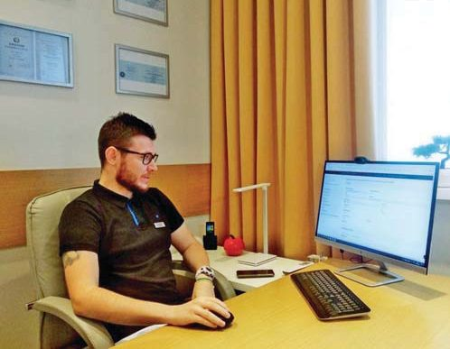
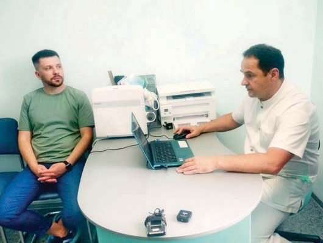

Новини · журнал «ДентАрт» 2022 №2
Нові умови виписування антибіотиків
З 1 серпня 2022 року для отримання антибіотиків в аптеках було впроваджено електронний рецепт. Стоматологи отримали можливість здійснювати призначення таких препаратів в електронній системі охорони здоров’я (ЕСОЗ) через медичну інформаційну систему nHealth (Здоров’я Нації) від компанії Роял Інтеграція, яка водночас є власником підприємства Вікісофт (Україна), що розробляє систему керування клініками Зубна Фея: ImPerio 4D. До того часу потрібно було укласти договір з медичною інформаційною системою, зареєструвати співробітників, отримати електронні підписи.
Одними з перших, хто виписав своїм пацієнтам електронний рецепт на антибіотики, стали полтавці: хірург стоматології «Ортекс» Богдан Романенко і кандидат медичних наук, імплантолог медичного центру «Імплаза» Андрій Бусло. Вони обидва погоджуються з тим, що електронний рецепт – це важливий, потрібний крок до загальної цифровізації в Україні.
7 червня 2022 р. Кабінет Міністрів України вніс зміни до Постанови №126 від 16 лютого 2022 року «Деякі питання провадження господарської діяльності з медичної практики». Усі приватні заклади, в т. ч. стоматології, мають не пізніше, ніж до 31 грудня 2022 року привести свою діяльність у відповідність з Ліцензійними умовами провадження господарської діяльності з медичної практики, затвердженими постановою Кабінету Міністрів України від 2 березня 2016 р. № 285 (Офіційний вісник України, 2016 р., №30, ст. 1184), з урахуванням змін, внесених пунктом 2 цієї постанови.
Отже, до 31.12.2022 року всі ліцензіати зобов’язані:
- зареєструватися в Реєстрі суб’єктів господарювання у сфері охорони здоров’я центральної бази даних електронної системи охорони здоров’я;
- забезпечити роботу з електронною системою охорони здоров’я, зокрема внесення первинної облікової медичної документації, ведення обліку медичних послуг.
В якому обсязі депаперизація у стоматології торкнеться форм 043, 037, 039, МОЗ поки що планує анонсувати на окремій зустрічі. Але вести медичну документацію належним чином тепер потрібно не тільки для акредитації.

Однією з найвагоміших переваг є використання пацієнтом потрібної кількості препарату під час лікування. Дуже добре, що ознайомившись із системою, я за пару кліків і кілька хвилин можу виписати електронний рецепт пацієнтові. Також добре те, що сам пацієнт бачить, що саме і в якій кількості я йому призначаю. Це набагато покращує комунікацію між ним і мною.

Ми завжди виписували рецепти за діючими речовинами, а не за брендовими назвами, тому наші пацієнти особливо не помітять різниці. За винятком іншої форми на папері… Пацієнти дуже цінують той факт, що можуть самі обирати ціновий діапазон за антибіотики.
Практичні курси та навчання у Навчальному центрі «Аполлонія»
Розклад курсів